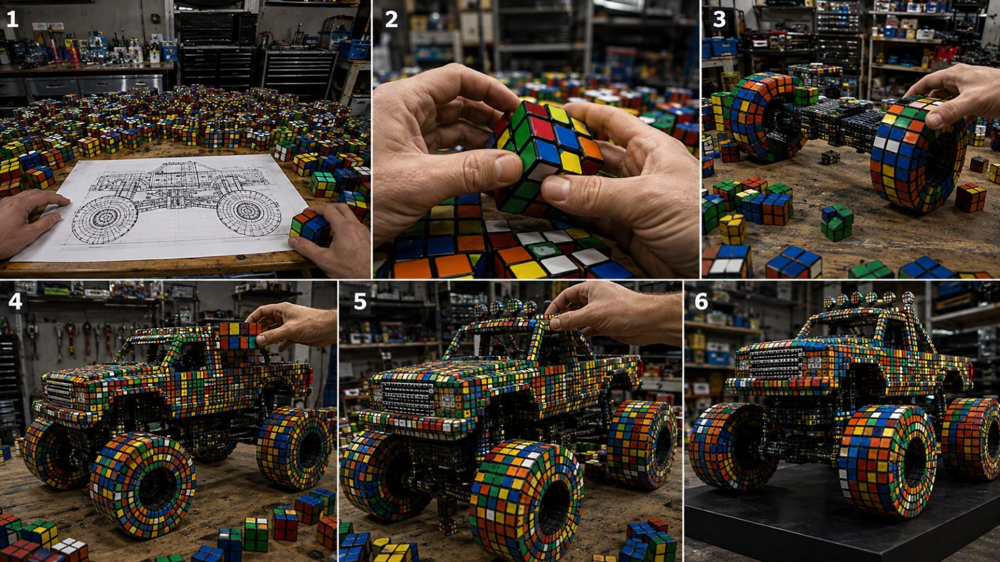

Back to all prompts
RUBIK CUBE ASSEMBLING
Storyboard & Reference

Download Reference{kind=link}
Create an **exactly 15-second vertical 9:16 ultra-photorealistic physical engineering-art video for Seedance 2.5** showing two realistic adult human hands constructing a highly recognizable three-dimensional sculpture of **{{OBJECT_NAME}}** entirely from hundreds of authentic physical Rubik’s Cubes. The result must feel like genuine footage of an extraordinary handcrafted installation filmed inside a real premium engineering workshop — never CGI, never animation, never a magical transformation.
### ABSOLUTE MATERIAL LOCK — MOST IMPORTANT RULE
The complete **{{OBJECT_NAME}}**, from its largest structural mass down to its smallest recognizable feature, must be constructed **exclusively from separate, individually recognizable Rubik’s Cubes**.
Every visible component — body, base, walls, curves, edges, roof, pillars, wings, wheels, windows, doors, arches, ornaments, supports, contours, protrusions and decorative details appropriate to **{{OBJECT_NAME}}** — must visibly consist of discrete Rubik’s Cubes.
There must be:
**NO conventional solid object underneath.
NO smooth replacement surfaces.
NO hidden full-size model.
NO Rubik’s Cube texture pasted onto a solid object.
NO melting cubes together.
NO cubes transforming into another material.
NO magical morphing.**
Even from the final hero angle, the viewer must clearly distinguish the grid geometry, black seams, colored square faces and boundaries of hundreds of separate physical cubes.
### PHYSICAL CONSTRUCTION LOCK
Begin with **nothing assembled**.
Every cube that becomes part of the sculpture must visibly come from the surrounding supply of loose Rubik’s Cubes.
The hands must physically:
pick up a cube → grip it → rotate cube layers when required → move it through real space → align it against previously installed cubes → press it into position → release it.
Cubes may never teleport, materialize, duplicate, float, dissolve or snap into existence without hand interaction.
Maintain believable gravity, friction, compression, finger pressure, contact shadows and structural support.
The developing sculpture must grow progressively and logically from an initial foundation.
### TEMPORAL COMPRESSION RULE
Because the build is shown in only 15 seconds, use **extremely efficient accelerated craftsmanship within believable physical motion**, similar to an authentic workshop hyperlapse captured continuously.
Hundreds of physical actions may happen rapidly, but every visible placement must retain understandable hand-to-cube contact.
Do **not** use magical time-lapse object growth where unattended cubes appear automatically.
The sculpture must visibly progress:
**loose cubes → small foundation → partial structure → recognizable silhouette → detailed structure → finished Rubik’s Cube sculpture.**
---
### 00:00–02:30 — INSTANT HOOK + ENGINEERING SETUP
Open immediately on a large professional workbench covered with hundreds of real scrambled Rubik’s Cubes.
Centered beside them lies a detailed architectural/engineering blueprint showing the recognizable shape and proportions of **{{OBJECT_NAME}}**.
Two realistic adult hands immediately enter frame.
One finger traces an important section of the blueprint while the other hand grabs the first Rubik’s Cube.
Use an intimate raw macro perspective roughly 35–60 cm from the hands.
The hands rapidly rotate several cube layers:
**click-click-click-click**
Show authentic cube mechanics, slightly worn plastic surfaces, tiny scratches, realistic colored stickers/tiles, fine black seams and subtle fingerprints.
The first cubes are physically placed onto the clean work surface to establish the structural footprint.
The viewer should understand the concept almost instantly:
**They are building {{OBJECT_NAME}} out of real Rubik’s Cubes.**
---
### 02:30–06:00 — FOUNDATION + PRIMARY MASS
The hands work rapidly but realistically.
Individual cubes are repeatedly:
selected → rotated → aligned → pressed against neighboring cubes.
The foundation expands.
Vertical and horizontal cube layers rise progressively.
The earliest recognizable silhouette of **{{OBJECT_NAME}}** begins emerging.
Keep several loose cubes scattered naturally around the active construction zone.
Show satisfying close-up details:
fingertips rotating a face
thumb pressing a cube flush
two cubes meeting edge-to-edge
rows being straightened
tiny alignment corrections
colored patterns becoming organized.
Every installed cube remains physically separate and visibly identifiable.
Nothing should suddenly become smooth.
The sculpture must still clearly look like a complex mosaic of actual Rubik’s Cubes.
---
### 06:00–10:00 — RECOGNIZABLE SHAPE + SIGNATURE FEATURES
The structure becomes unmistakably recognizable as **{{OBJECT_NAME}}**.
Now construct its most iconic features.
Adapt these automatically according to the chosen object:
vehicles → wheels, bonnet, cabin, grille, headlights, spoiler
aircraft → wings, cockpit, fuselage, tail
architecture → columns, windows, arches, rooflines, domes
animals → body, legs, head, ears, tail
ships → hull, decks, towers, funnels
robots → torso, limbs, head, joints
monuments → structural tiers, arches, towers, ornaments.
All such features must STILL be made only from visible Rubik’s Cubes.
When creating curves, represent the curvature through **carefully stepped cube geometry**, not smooth generated surfaces.
The hands deliberately rotate colored faces so adjacent cubes form controlled visual patterns that help define contours and important features.
Maintain structural continuity.
Previously placed cubes stay in the same location.
No shape shifting.
No disappearing geometry.
No replacement model.
---
### 10:00–12:50 — DETAIL PASS + FINAL CUBES
The sculpture is approximately 90–95% complete.
Switch naturally into tighter craftsmanship framing without making a hard edit.
Show one hand supporting the structure while the second adds the last few defining Rubik’s Cubes.
Capture especially satisfying actions:
a final cube rotated into the correct colors
a cube inserted into a small remaining gap
thumb pressure locking a row flush
fingers straightening an imperfect edge
a slightly crooked cube corrected
a topmost/detail cube carefully positioned.
Then both hands perform a quick visual inspection.
One hand gently wipes a small exposed area using a clean dark microfiber cloth.
Do not hide cube seams or individual pieces.
---
### 12:50–15:00 — MUSEUM HERO REVEAL
The hands slowly withdraw from the frame.
The camera performs a **smooth controlled push-back followed by a subtle 20–30° orbit** around the finished sculpture.
Reveal the completed **{{OBJECT_NAME}}** standing proudly on the engineering workbench/display platform.
It must immediately read as the chosen object while simultaneously remaining unmistakably constructed from hundreds of genuine Rubik’s Cubes.
Allow the final framing to reveal:
front structure
side depth
upper geometry
signature features
dense cube construction
individual colored faces
black cube seams
tiny alignment irregularities
realistic plastic reflections.
Use sophisticated studio lighting with soft overhead illumination and gentle edge highlights.
Keep the background slightly defocused while the complete sculpture remains sharp enough for individual cubes to be clearly visible.
End with approximately **0.5 second of stable hero framing** suitable for a seamless social-media replay.
---
### CAMERA & REALISM LOCK
**Aspect ratio:** 9:16 vertical
**Duration:** exactly 15.0 seconds
**Generator:** Seedance 2.5
**Capture aesthetic:** raw premium real-world camera footage
**Camera:** close handheld/gimbal-assisted professional macro coverage
**Lens behavior:** natural shallow depth of field, mild focus breathing, authentic optical falloff
**Movement:** subtle controlled push-ins, lateral tracking and final micro-orbit
**Frame behavior:** physically coherent motion blur
**Lighting:** real studio lights interacting naturally with plastic cube surfaces
**Exposure:** subtle realistic automatic exposure response
**Reflections:** physically plausible plastic highlights only
**Hands:** exactly two anatomically correct adult hands throughout
**Physics:** strict gravity, collision, pressure and contact
**Continuity:** same cubes, same sculpture, same hands, same workbench, same workshop for all 15 seconds.
The image should contain tiny real-world imperfections: microscopic dust, light fingerprints, small cube scratches, slight alignment differences and minor surface wear.
Do not make the cubes pristine CGI assets.
### RUBIK’S CUBE IDENTITY LOCK
Each cube must retain:
standard cubic proportions
recognizable 3×3 face subdivision
clearly separated small colored squares
black/dark dividing seams
physical corner and edge pieces
real plastic depth
tiny surface imperfections
realistic rotation mechanics.
Cube faces may use recognizable combinations of:
red, blue, green, orange, yellow and white.
Never replace cubes with generic colorful blocks, Lego bricks, pixels, voxels, tiles or mosaic squares.
### OBJECT RECOGNITION RULE
The final sculpture must preserve the immediately recognizable proportions and iconic silhouette of **{{OBJECT_NAME}}**, but those proportions must be interpreted through modular Rubik’s Cube geometry.
If the real object normally contains smooth curves, approximate those curves using stair-stepped layers of individually visible cubes.
Do not solve curvature by generating smooth CGI surfaces.
### AUDIO
Use only realistic workshop ASMR:
Rubik’s Cube rotation clicks
plastic tapping plastic
cubes sliding lightly on the bench
soft hand contact
subtle cloth friction
quiet room ambience.
No music.
No narration.
No dialogue.
No artificial cinematic booms.
### SEEDANCE 2.5 FAILURE-PREVENTION LOCK
At no point should Seedance interpret the prompt as:
“a normal {{OBJECT_NAME}} covered in Rubik’s Cube colors.”
Instead interpret it as:
**hundreds of complete physical Rubik’s Cubes spatially arranged together to create the three-dimensional silhouette of {{OBJECT_NAME}}.**
Each Rubik’s Cube remains a complete object with its own six-sided geometry.
The sculpture exists because the cubes are spatially arranged together — not because an ordinary object has acquired a Rubik’s Cube texture.
### STRICT NEGATIVE PROMPT
normal {{OBJECT_NAME}}, conventional finished object, object merely painted with Rubik colors, Rubik texture mapped onto solid model, colorful voxel model, Lego blocks, bricks, generic cubes, mosaic texture, smooth geometry, smooth body panels, solid sculpture, stone, metal body, clay, resin, wood, foam, conventional plastic model, hidden complete model, invisible support body, cube skin, melted cubes, fused cubes, liquefied cubes, stretched cubes, morphing cubes, transforming materials, cubes appearing automatically, teleporting cubes, floating cubes, instant construction, unattended construction, pre-built sculpture, jump transformation, magical assembly, object spawning, disappearing cubes, collapsing structure, inconsistent cube scale, giant cubes mixed with tiny cubes, distorted 3×3 grids, malformed Rubik’s Cubes, missing cube faces, impossible intersections, physics errors, hand passing through cubes, broken fingers, extra fingers, duplicate hands, extra arms, deformed hands, changing hands, flicker, temporal inconsistency, geometry shifting, background changing, blueprint changing, unfinished structure, cartoon, animation, game graphics, obvious CGI, synthetic render appearance, oversaturated colors, extreme bloom, excessive depth blur, aggressive camera shake, fast spinning camera, cuts, transitions, subtitles, captions, labels, logos, watermark, UI elements, text overlays.
**FINAL PRIORITY ORDER:**
1. Physically real individual Rubik’s Cubes.
2. Manual cube-by-cube construction.
3. Recognizable {{OBJECT_NAME}} silhouette.
4. Zero transformation into a conventional object.
5. Perfect temporal and structural continuity.
6. Realistic hands and contact physics.
7. Strong progressive visual payoff.
8. Premium museum-quality final reveal.
9. Ultra-photorealistic real-world appearance.
10. Exact 15-second vertical Seedance 2.5 execution.